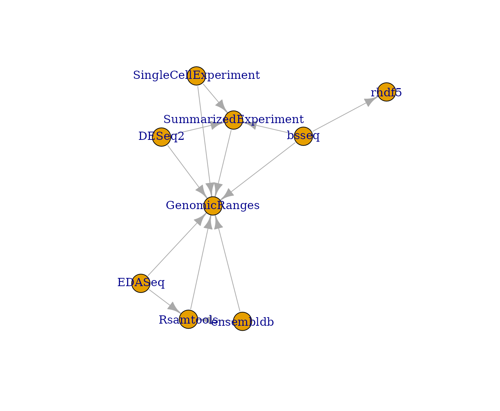
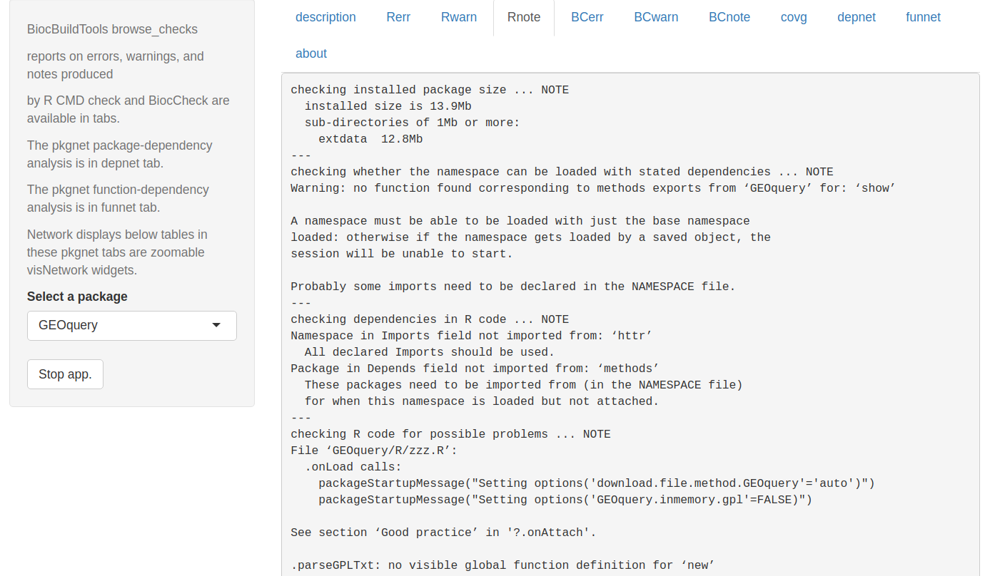

Continuous integration and delivery approaches for Bioconductor
Vincent J. Carey, stvjc at channing.harvard.edu
November 16, 2022
Source:vignettes/cicd1.Rmd
cicd1.RmdBasic concepts
Release and devel collections
The Bioconductor project has fostered development and use of software for analysis of state-of-the-art genome-scale assays for almost two decades. The project has successfully addressed two conflicting objectives:
Users require familiar and stable toolsets to perform analyses that may take years to complete.
Developers want to make use of cutting-edge innovations in biotechnology and computer science to build their tools.
To achieve these objectives, it was recognized at the outset of the project that package management should emulate the process by which the R language evolves. A “release branch” is defined that constitutes a stable collection. Changes to packages in the release branch are permitted to address bugs or documentation shortfalls; otherwise, code in the release branch is considered permanently locked. Changes to packages in the “devel branch” can introduce new features. A change to a package in the devel branch that alters that package’s API in release must be staged: the “old” API components that are to be removed must remain available for one release in “deprecated” state, after which these components can be declared defunct and removed from functionality.
To accommodate the rapid pace of innovation in biotechnology, release branches of Bioconductor packages are produced every six months, transitioning from the current devel branch. For code from the devel branch to transition into release, formal tests must be passed.
Implementation of release and devel collections in git
The ensemble of R packages managed and distributed in the Bioconductor project is a collection of git repositories. The “devel” version of each package is the “master” branch of the associated repository. The “release” version of each package is a formally tagged branch of the associated repository. The complete history of code changes to each package is preserved in the git log and branch tags of the form RELEASE_X_Y identify the various package releases.
In summary, each git repository for each Bioconductor package contains the history of modifications to source code and documentation, with the master branch providing the current devel image, and RELEASE_X_Y tagged branches providing past releases.
The current package collections
Bioconductor has three main package types: software, annotation, and experiment. ‘Software’ packages primarily support analysis and visualization, ‘annotation’ packages provide reference information about genomes, genes, and other concepts of biology, and ‘experiment’ packages provide curated data and documentation for exemplary experiments.
To obtain the list of package names, we use the git repo git.bioconductor.org/admin/manifest, which has three text files with package names for each of the three types.
A small collection for illustration
We identified a small group of packages and took a snapshot of the associated repositories.
## [1] "parody" "vsn" "BiocFileCache" "eds"
bioc_coreset(small=TRUE)## [1] "parody" "vsn" "BiocFileCache" "eds"In the following, we produce the folder.
td = tempfile()
dir.create(td)
unzip(system.file("demo_srcs/litclone.zip", package="BiocBuildTools"), exdir=td)Self-testing
Bioconductor’s guidelines for contributions indicate that contributed packages must pass R CMD check, a constantly evolving procedure for assessing adequacy of package documentation and risks of error in package code.
We’ll use the rcmdcheck package to capture information on package compliance to basic standards. This runs R CMD check and organizes the message stream from that process.
## ── R CMD build ─────────────────────────────────────────────────────────────────
## * checking for file ‘.../DESCRIPTION’ ... OK
## * preparing ‘parody’:
## * checking DESCRIPTION meta-information ... OK
## * installing the package to build vignettes
## * creating vignettes ... OK
## * checking for LF line-endings in source and make files and shell scripts
## * checking for empty or unneeded directories
## * looking to see if a ‘data/datalist’ file should be added
## * building ‘parody_1.57.0.tar.gz’
##
## ── R CMD check ─────────────────────────────────────────────────────────────────
## * using log directory ‘/tmp/Rtmp0TdWTn/file2d3b55f1aca5b/parody.Rcheck’
## * using R Under development (unstable) (2022-10-04 r83017)
## * using platform: x86_64-pc-linux-gnu (64-bit)
## * using session charset: UTF-8
## * checking for file ‘parody/DESCRIPTION’ ... OK
## * this is package ‘parody’ version ‘1.57.0’
## * checking package namespace information ... OK
## * checking package dependencies ... OK
## * checking if this is a source package ... OK
## * checking if there is a namespace ... OK
## * checking for executable files ... OK
## * checking for hidden files and directories ... OK
## * checking for portable file names ... OK
## * checking for sufficient/correct file permissions ... OK
## * checking whether package ‘parody’ can be installed ... OK
## * checking installed package size ... OK
## * checking package directory ... OK
## * checking ‘build’ directory ... OK
## * checking DESCRIPTION meta-information ... OK
## * checking top-level files ... OK
## * checking for left-over files ... OK
## * checking index information ... OK
## * checking package subdirectories ... OK
## * checking R files for non-ASCII characters ... OK
## * checking R files for syntax errors ... OK
## * checking whether the package can be loaded ... OK
## * checking whether the package can be loaded with stated dependencies ... OK
## * checking whether the package can be unloaded cleanly ... OK
## * checking whether the namespace can be loaded with stated dependencies ... OK
## * checking whether the namespace can be unloaded cleanly ... OK
## * checking dependencies in R code ... OK
## * checking S3 generic/method consistency ... OK
## * checking replacement functions ... OK
## * checking foreign function calls ... OK
## * checking R code for possible problems ... OK
## * checking Rd files ... OK
## * checking Rd metadata ... OK
## * checking Rd cross-references ... OK
## * checking for missing documentation entries ... OK
## * checking for code/documentation mismatches ... OK
## * checking Rd \usage sections ... OK
## * checking Rd contents ... OK
## * checking for unstated dependencies in examples ... OK
## * checking contents of ‘data’ directory ... OK
## * checking data for non-ASCII characters ... OK
## * checking data for ASCII and uncompressed saves ... OK
## * checking installed files from ‘inst/doc’ ... OK
## * checking files in ‘vignettes’ ... OK
## * checking examples ... OK
## * checking for unstated dependencies in ‘tests’ ... OK
## * checking tests ...
## Running ‘test.R’
## OK
## * checking for unstated dependencies in vignettes ... OK
## * checking package vignettes in ‘inst/doc’ ... OK
## * checking running R code from vignettes ...
## ‘parody.Rmd’ using ‘UTF-8’... OK
## NONE
## * checking re-building of vignette outputs ... OK
## * checking PDF version of manual ... OK
## * DONE
##
## Status: OK
names(chk_parody)## [1] "stdout" "stderr" "status" "duration" "timeout"
## [6] "rversion" "platform" "errors" "warnings" "notes"
## [11] "description" "package" "version" "cran" "bioc"
## [16] "checkdir" "test_fail" "test_output" "install_out" "session_info"
## [21] "cleaner"The basic outcomes of a ‘passed’ check process are listed here:
c(nerr=length(chk_parody$errors),nwarn= length(chk_parody$warnings),
nnote= length(chk_parody$notes))## nerr nwarn nnote
## 0 0 0No error was detected, but a warning and several notes were reported. We will look at these in further detail below.
Implicit interoperability testing
A goal of the core members of the Bioconductor project is the development of reusable infrastructure components that are employed by independent package contributors. Programming with common data structures and APIs simplifies development of chained workflows, and facilitates methods comparison and optimization. Reusable components can be analyzed for inefficiencies and improved to the benefit of the entire community of users and developers.
R packages declare interdependencies explicitly in the DESCRIPTION file. An example is
## affy, limma, lattice, ggplot2
cat("\n")The fields Depends, Imports, Suggests and LinkingTo define the independently maintained packages that must be available for Rsamtools to work effectively. Details on these types of dependency are provided in Writing R Extensions.
We can visualize the interdependencies of a small collection using BiocPkgTools.
library(BiocPkgTools)
library(BiocBuildTools)
library(dplyr)
library(magrittr)
dd = buildPkgDependencyDataFrame()
dfc = dd %>% filter(Package %in% bioc_coreset(small=FALSE) & dependency %in% bioc_coreset(small=FALSE))
gg = buildPkgDependencyIgraph(dfc)
plot(gg)
Some of the packages in the small set are isolated.
setdiff(bioc_coreset(), union(dfc$Package, dfc$dependency))## [1] "parody" "vsn" "BiocFileCache" "eds"Supporting developers with build system enhancements
The current build system has functioned well as the software collection has grown from a few hundred to more than 1800 packages. The key resources for developers are
- daily builds and checks of all packages on Linux, Windows and macOS
- reports of check process outcomes
- simplified distribution of packages and all dependencies via
BiocManager::install - programmatic check for outdated packages via
BiocManager::valid
We propose to enhance these facilities by
- providing more structure in the check process report to guide developers towards quality improvements
- adding information on self-testing and package interdependencies to check process reports
- strengthening social coding practice by simplifying pull request production
- making the build system platforms continuously available for developer testing
The last aim will take considerable work and discussion is deferred.
Improving check report delivery
Here is a screen shot of the browse_checks app in BiocBuildTools

We use pkgnet to generate network statistics and displays related to package and function dependencies.

TO DO:
- parse URL entry of DESCRIPTION and add ‘start a pull request’ at each relevant part of the report
- ingest unit tests and add a tab that provides their source code
- develop code coverage reports and convey them – this is probably to be done off line
- other social coding support